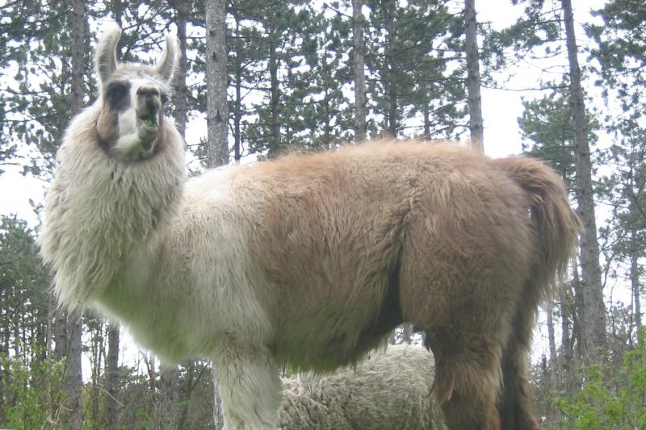

Ihr Hund darf mit.
Auch Hunde sind in der Grill Ranch willkommen. So können Sie Ihren Ausflug gemeinsam mit Ihrem Vierbeiner genießen.
UNSERE TIERISCHEN NACHBARN
Bei uns gibt es mehr zu entdecken als gutes Essen. Lernen Sie die Tiere der Grill Ranch kennen und machen Sie Ihren Besuch zum kleinen Ausflug.

WER BEI UNS ZU HAUSE IST
Diese Tiere gehören zur Grill Ranch.
Auch Hunde sind in der Grill Ranch willkommen. So können Sie Ihren Ausflug gemeinsam mit Ihrem Vierbeiner genießen.
Futtersackerl finden Sie unmittelbar neben dem Eselgehege. Bitte beachten Sie die Hinweise vor Ort.
Fragen zu Ihrem Besuch?AUSFLUG & GENUSS
Verbinden Sie Ihren Besuch mit einem Essen in unserer Grill Ranch.